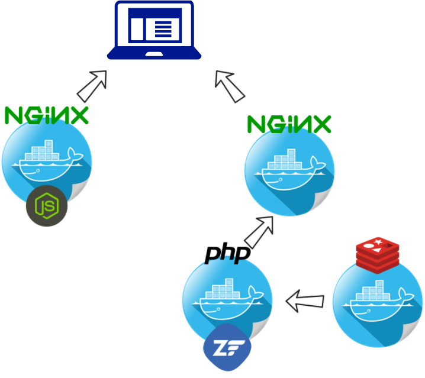
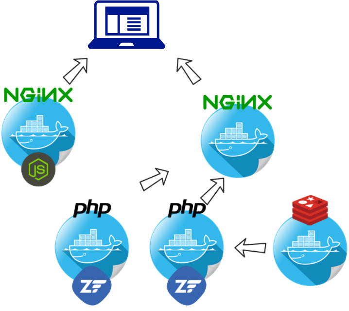
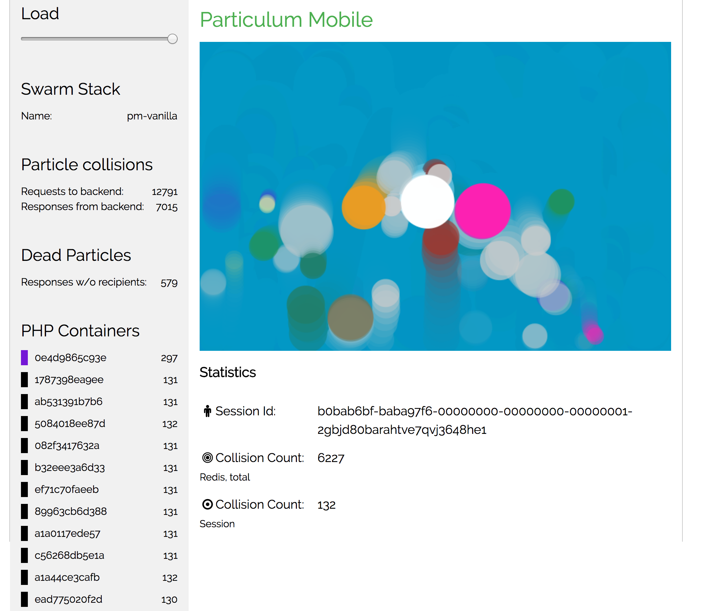

Particulum Mobile:
Zend Expressive Microservices in Docker Swarm
Jan Burkl
Solution Consulting Manager
Rogue Wave Software
php.ruhr 2017, Dortmund, November 9th 2017

Zend Expressive
Expressive 2.0
The PHP framework for Middleware applications
- PSR-7 HTTP Message support (using zend-diactoros)
- Support of lambda middleware (PSR-15) and double pass ($request, $response, $next)
- Piping workflow (using zend-stratigility)
- Features: routing, dependency injection, templating, error handling
- Last release 2.0.3, 28th March 2017
Middleware
A function that gets a request and generates a response
use Psr\Http\Message\ServerRequestInterface as Request;
use Interop\Http\ServerMiddleware\DelegateInterface;
function (Request $request, DelegateInterface $next)
{
// doing something with $request...
// for instance calling the delegate middleware $next
$response = $next->process($request);
// manipulate the $response
return $response;
}
Installation
You can install Expressive 2.0 using composer:
composer create-project zendframework/zend-expressive-skeleton api
Particulum Mobile
Perpetuum Mobile / Free Energy
Microservices
“[...] a collection of loosely coupled services.”
en.wikipedia.org/wiki/Microservices
- No Standard Definition
- No Specification
- Not specific to any Technology
Docker
Microservice Architectural Style
“[...] a suite of small services, each running in its own process and communicating with lightweight mechanisms, often an HTTP resource API”

Docker Compose
Docker Swarm (Mode)
“Current versions of Docker include swarm mode for natively managing a cluster of Docker Engines called a swarm. Use the Docker CLI to create a swarm, deploy application services to a swarm, and manage swarm behavior.”
Init / Manager
$ docker swarm init --advertise-addr 192.168.99.121
Swarm initialized: current node (bvz81updecsj6wjz393c09vti) is now a manager.
To add a worker to this swarm, run the following command:
docker swarm join \
--token SWMTKN-1-3pu6hszjas19xyp7ghgosyx9k8atbfcr8p2is99znpy26u2lkl-1awxwuwd3z9j1z3puu7rcgdbx \
172.17.0.2:2377
To add a manager to this swarm, run 'docker swarm join-token manager' and follow the instructions.
Routing Mesh
“The routing mesh enables each node in the swarm to accept connections on published ports for any service running in the swarm, even if there’s no task running on the node.”
Ingress Network

Deployment
Docker compose v3
Dev
Prod
$ docker stack deploy --compose-file stack.yml pm
Install and Update
Building (and pushing) images
Build
$ docker build -t particulum-mobile/backend .
Docker-Compose
builds images on-the-fly
Makefile
Demo
Particulum Mobile, Portainer, Visualizer
Scalable Microservice
Session Handling?
One Step beyond
What do we have?
What do we want?

Why?

priorization
- Browser request limit
- Request queueing on server side
Just a Docker Compose file modification
Benefits 1/2
- Docker Swarm (& Compose)
- See above ⬆
- System Setup Config in VCS
- Modular
- Consistent Stack
Benefits 2/2
Expressive
- Lightweight
- No Framework Silo
- Modular
- Back to the Roots
DANKESCHÖN
Contact me: jan.burkl [at] roguewave.com
Follow me: @5square_de
Slides: 5square.de/talks